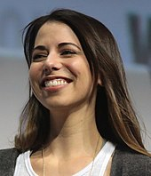
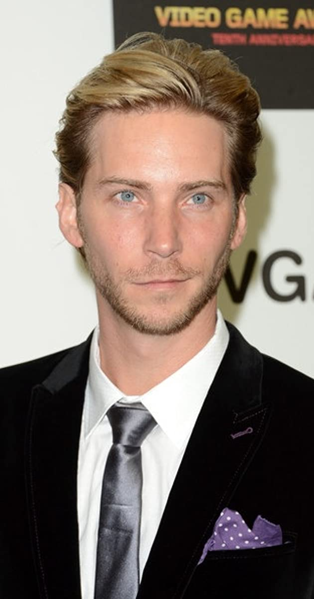

Ellie (Ashley Johnson) – The protagonist of the game. Ellie is a 19-year-old survivor of the Cordyceps Brain Infection outbreak and the only person known to be immune to the infection. Ellie lives in a large community in Jackson. She sports a tattoo over the bite scar on her right arm to hide her immunity. After witnessing a horrific attack, Ellie embarks on a personal quest for vengeance.
Abby (Laura Bailey) – The false protagonist of the game. Abby is a member of the Washington Liberation Front, a former member of the Fireflies, and begins the game of attempting to locate a resident of the community in Jackson. Abby is forced to deal with the fallout of her own quest for revenge.
Joel (Troy Baker) – Joel is Ellie's father figure and a former smuggler, who bonded with her years ago while transporting her across the country to the Fireflies in the hopes of creating a vaccine for the CBI outbreak. Unbeknownst to Ellie, Joel killed the Fireflies who were going to kill Ellie to create a cure.
Tommy (Jeffrey Pierce)- Tommy is Joel's younger brother and is one of the leaders of the community in Jackson, alongside his wife Maria. Tommy is the only person aware of Joel's killing of the Fireflies and deception of Ellie. Tommy, like Ellie, spends the game on his own quest for vengeance.
Dina (Shannon Woodward) - Dina is a close friend and love interest of Ellie and a resident of the community in Jackson. She is Jesse's ex-girlfriend, and kisses Ellie which causes a stir in the community. Dina accompanies Ellie throughout the game as their relationship develops.
Jesse (Stephen Chang) - Jesse is a friend of Ellie, and Dina's ex-boyfriend. He is a resident of the community in Jackson, and accompanies Ellie on her quest.
Maria (Ashley Scott) – Maria is Tommy's wife, and a member of the Jackson community.
Owen (Patrick Fugit) - Owen is a member of the WLF and Abby's childhood friend and ex-boyfriend. He is in a relationship with Mel and is having a child with her.
Mel (Ashly Burch) - Mel is a medic and a member of the WLF. She is pregnant with Owen's child, which causes tension between her and Abby.
Manny (Alejandro Edda) - Manny is a member of the WLF and a friend and roommate of Abby's. He accompanies her to Jackson and was later seen in the Seattle flashbacks.
Nora (Chelsea Tavares) - Nora is a member of the WLF and a friend of Abby's. She accompanies Abby to Jackson and is later sought out by Ellie.
Lev (Ian Alexander) – Lev is a former member of a religious cult called the Seraphites set to wipe out all 'sin' in the world after the outbreak. Lev is branded an apostate by the Serephites for shaving his hair and is hunted by them alongside his older sister, Yara. Lev becomes Abby's companion and assists her.
Yara (Victoria Grace) – Yara is Lev's older sister who left the Seraphites with him, and is severely injured by them during their escape. She later accompanies Abby during the flashbacks of the latter's perspective.
Isaac (Jeffrey Wright) – Isaac is the leader of the Washington Liberation Front, and a secondary antagonist in Abby's story.
The Last of Us Part 2 has a lot to say about us as people after we connected ourselves to these characters in the first entry. The journey is one that is not for squeamish, but it was one that deserved to be told. As the player, we must once again witness the reality of this harsh world and those who are brought up in it...The Last of Us Part 2 is a masterclass in environmental design, and that can not be overlooked. The messiness of the second act doesn’t overshadow how significant this adventure is.
Ellie (Ashley Johnson)
Abby (Laura Bailey)
Joel (Troy Baker)